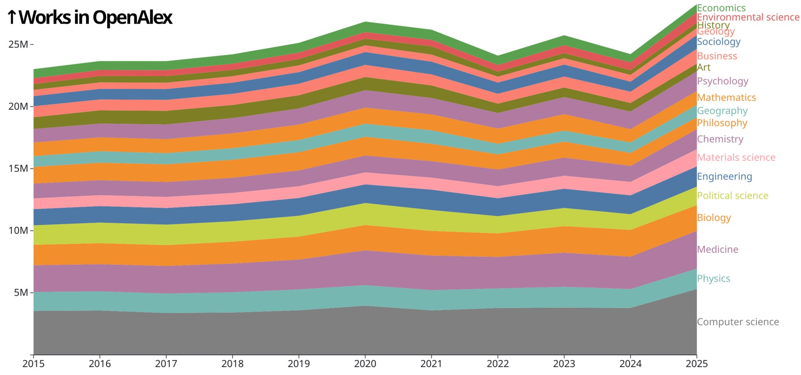

Statistika va so'rovnomalarni qanday o'qish kerak: o'rtacha qiymat, xatolik chegarasi va chalg'ituvchi grafiklar
Yangiliklar har kuni raqamlar, foizlar va so'rovnoma natijalariga to'la. Lekin bir xil raqam turlicha ko'rsatilsa, mutlaqo boshqa taassurot qoldirishi mumkin. Ushbu media-savodxonlik ma'lumotnomasi so'rovnomalar qanday ishlashi, xatolik chegarasi nima ekani, o'rtacha va median qiymatning farqi, hamda grafiklar qanday chalg'itishi mumkinligini amaliy tarzda tushuntiradi.

Raqam — kuchli dalil, chunki u aniq va ishonchli ko'rinadi. Aynan shu sabab raqamlar ba'zan auditoriyani chalg'itish uchun ishlatiladi: bir xil ma'lumotni turli usulda taqdim etib, qarama-qarshi xulosalar chiqarish mumkin. Quyida statistika va so'rovnomalarni o'qishda yodda tutish kerak bo'lgan asosiy tushunchalar manbalarga asoslanib keltiriladi. Bu — fikr emas, balki statistika metodologiyasining umum qabul qilingan qoidalari.
So'rovnoma: tanlanma va butun aholi
Hech bir so'rovnoma butun aholining har bir kishisidan so'ramaydi — u kichik guruhni (tanlanma, sample) so'rab, natijani butun aholiga taqqoslaydi. Buning ishlashi uchun tanlanma vakillik qilishi (representative) kerak, ya'ni aholining tuzilishini (yosh, hudud, jins va h.k.) aks ettirishi lozim. Shuning uchun birinchi savol: kimdan so'ralgan, nechta kishi so'ralgan va ular qanday tanlangan?
Xatolik chegarasi (margin of error)
So'rovnoma natijasi aniq bir raqam emas, balki oraliqdir. Pew Research Center tushuntirishicha, masalan "±3 foiz punkt, 95% ishonch darajasida" degani — agar xuddi shu so'rovnoma 100 marta o'tkazilsa, natija 100 holatning 95 tasida haqiqiy qiymatdan 3 foiz punkt chegarasida bo'lishi kutiladi. Ya'ni 52% va 49% ko'rsatkichlari ±3 punktli xatolik chegarasida statistik jihatdan teng bo'lishi mumkin. Tanlanma qancha kichik bo'lsa, xatolik chegarasi shuncha katta bo'ladi.

Faqat tanlanma xatoligi emas
Pew Research Center ta'kidlaydi: xatolik chegarasi faqat tanlanmadan kelib chiqadigan xatoni o'lchaydi. Bundan tashqari yana uchta muhim xato manbasi bor: qamrov xatosi (noncoverage — aholining bir qismi umuman tanlanmaga tusha olmasligi), javob bermaslik xatosi (nonresponse — ayrim guruhlar so'rovda qatnashishi ehtimoli past bo'lishi) va o'lchov xatosi (measurement — savol noto'g'ri tushunilishi yoki javob noto'g'ri berilishi). Shuning uchun "±3%" yozuvi natijaning mutlaqo aniqligini anglatmaydi.
O'rtacha va median
"O'rtacha" (mean) — barcha qiymatlar yig'indisini ularning soniga bo'lish. Lekin bir nechta juda katta qiymat o'rtachani sezilarli ko'taradi. Masalan, bir xonada 9 kishining oyligi 1000 dollar, bittasiniki 1 million dollar bo'lsa, "o'rtacha" oylik 100 900 dollar chiqadi — bu hech kimning haqiqiy ahvolini aks ettirmaydi. Median (o'rta qiymat — qiymatlarni saralaganda eng o'rtada turgani) bu holatda haqiqatga yaqinroq. Shuning uchun daromad yoki narx haqida gap ketganda o'rtachami yoki medianmi ekani muhim.
Korrelyatsiya sababiyat emas
Ikki hodisa birga o'zgarishi (korrelyatsiya) — ulardan biri ikkinchisini keltirib chiqargani (sababiyat) degani emas. Masalan, muzqaymoq sotuvi va cho'kish hodisalari yozda birga ko'payadi, lekin biri ikkinchisining sababi emas — ikkalasini ham issiq ob-havo keltirib chiqaradi. "A bilan B bog'liq" degan xabar ko'rsangiz, o'rtada uchinchi omil bor-yo'qligini so'rash o'rinli.
Foiz va foiz punkt; nisbiy va mutlaq
"Foiz" bilan "foiz punkt" — har xil narsa. Ko'rsatkich 4%dan 5%ga chiqsa, u 1 foiz punktga, lekin 25 foizga oshgan bo'ladi. Xabarlarda ko'pincha kattaroq, ta'sirchanroq raqam tanlanadi. Xuddi shunday, "xavf ikki baravar oshdi" (nisbiy) degani mutlaq miqdorda juda kichik bo'lishi mumkin — masalan 1 dan 2 holatga (10 000 kishiga). Nisbatan katta ko'ringan o'zgarish mutlaq raqamlarda qanchaligini tekshirish kerak.
Chalg'ituvchi grafiklar
Grafik ham raqamni "bo'rttirishi" mumkin. Eng keng tarqalgan usullar: vertikal o'qni noldan boshlamaslik (kichik farqni tog'dek ko'rsatadi), vaqt oralig'ini tanlab olish (faqat o'suvchi yoki faqat pasayuvchi davrni ko'rsatish), taqqoslash bazasini (baseline) yashirish va o'lchamlarni buzish. Grafik ko'rganda o'qlar (eksa) qiymatlari, davr va manba belgilanganini tekshirish foydali.
Amaliy ro'yxat
Raqam yoki so'rovnoma ko'rganda qisqa tekshiruv: (1) manba kim — so'rovni kim buyurtma qilgan va to'lagan? (2) qancha kishi, qachon va qanday so'ralgan? (3) xatolik chegarasi ko'rsatilganmi? (4) bu o'rtachami yoki medianmi? (5) foizmi yoki foiz punktmi; nisbiymi yoki mutlaqmi? (6) grafik o'qi noldan boshlanganmi va davr adolatli tanlanganmi? Bu savollar raqamni rad etish uchun emas, balki uni to'g'ri tushunish uchun.